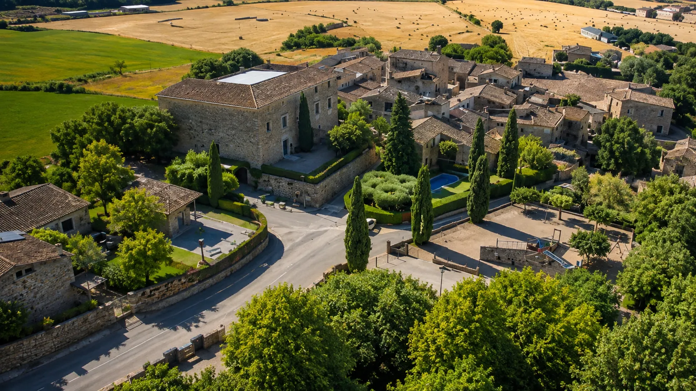

Més que una estada, una experiència
Casa rural i espais per a activitats a Orriols, a l’Alt Empordà (Girona).
Experiències

Amants del menjar
Experiències gastronòmiques
Tasta el territori a través de restaurants, productes locals, mercats i racons amb història.
Taller de ioga
Cos, ment i natura
Espais i tallers de ioga per desconnectar, respirar i reconnectar amb tu i amb l’entorn.

Ciclisme i gravel
Pedala, descobreix, gaudeix
Rutes en bici i gravel per paisatges únics, combinant esport, natura i gastronomia local.

Grups d’amics
Experiències per compartir
Escapades, tallers i activitats dissenyades per gaudir plegats, compartir bons moments i crear records inoblidables.

Les nostres cases
Allotjaments amb encant
Tradició, natura i confort

Ca La Maria
- 12 persones

Casa Vermella
- 6 persones

Casa Blava
- 5 persones

Casa Vermella i Blava
- 11 persones

Grans Paisatges
- 18 persones
Viu l’Empordà
Cinc cases, infinites històries
Benvinguts a Ca la Maria
Història, natura i moments compartits
Ca la Maria és molt més que un lloc on dormir. És una casa pensada per retrobar-se, compartir i gaudir de les petites coses sense presses.
Situada a Orriols, en un entorn tranquil i ben comunicat, és un punt de partida ideal per descobrir l’Empordà, Girona i alguns dels racons més especials de la Costa Brava.


Orriols
Entre Girona, Figueres i la Costa Brava
Situada a Orriols, en un entorn tranquil i ben comunicat, és un punt de partida ideal per descobrir l’Empordà, Girona i alguns dels racons més especials de la Costa Brava.
Perfecte per descobrir l’Empordà: natura, cultura, gastronomia, pobles medievals i rutes en bicicleta o a peu.
Un punt de partida privilegiat
Figueres
15 km
Girona
19 km
Costa Brava
25 km
Natura i espais protegits
Pobles amb encant